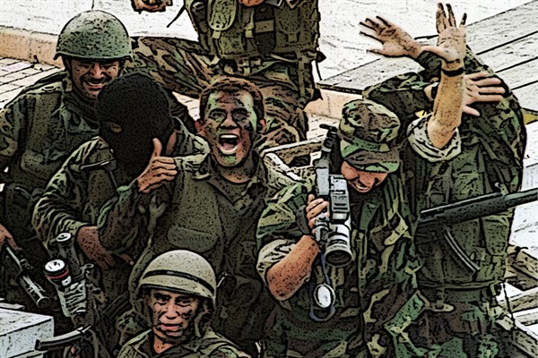

REALIDAD NACIONAL
¡Bienvenidos a nuestro espacio dedicado a explorar la realidad del Perú! En este blog, profundizaremos en los temas más importantes y desafiantes que conforman la historia y sociedad peruana, con el fin de promover un análisis crítico y reflexivo. Nuestro contenido está estructurado en cuatro módulos, los cuales abordan desde los momentos históricos más significativos hasta las dinámicas sociales y económicas que definen el Perú actual. A través de investigaciones, discusiones y tareas, nos adentraremos en estos temas para comprender mejor cómo el pasado influye en el presente y cómo podemos proyectar un mejor futuro para nuestro país. ¡Te invitamos a ser parte de este fascinante recorrido!